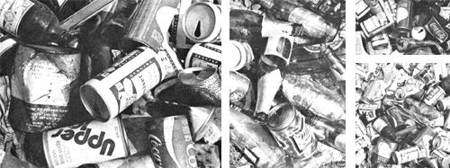
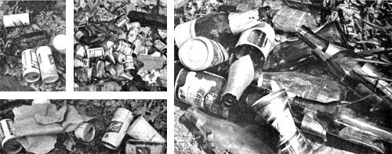

Can you name a quick, easy, inexpensive way to [1] clean up the nation's highways, [2] reduce the amount of garbage in the city and county dumps, [3] save billions of dollars each and every year [4] create over 100,000 new jobs, and [5] conserve more than seven million tons of glass, steel, and aluminum every 12 months...as well as enuogh energy to warm some two million American homes for an entire year? Sure...
Back in the 1940's and 50's-when a few of MOTHER's more elderly staffers were still children-you could keep yourself in chewing gum, candy, and other teeth rotters by scrounging up and redeeming empty pop and beer bottles ... which in those days had a price on their heads! For example, in 1947-when almost all soft-drink and beer containers sold were refillable-small bottles fetched 2 cents and quarts 5 cents apiece at any corner grocery or liquor store.
Pickin's weren't easy, though, because hardly anyone tossed out these treasures ... which'd just pile up on the back porch-or in the garage-until someone would finally remember to haul 'em down to the market for a refund. In other words, even those few pennies on each bottle were enough to make sure that 95 percent of the containers found their way back to the bottling plants for a refill . . . and most were used 10 to 15 times-or more!-before either loss or breakage retired them from circulation.
Bottlemakers, of course, would have preferred a slightly less durable product, but it wasn't until the late 50's that they finally managed to formulate a glass strong enough to withstand the rigors of filling and shipping once . . . but too flimsy to endure them a second time! Meanwhile, the steel industry had been successfully promoting beverage cans since the end of World War II and, by 1960, the beer can had become a firmly entrenched artifact of American life . . . a monument to "convenience" scattered abundantly along the nation's roadsides.
Even at that late date (1960), though, you could still buy almost all your soft drinks and half your beer in refillable bottles. As the 60's wore on, however, the noble returnable-for-deposit glass container steadily lost ground first to the steel-and then the aluminum-can . . . and finally, to the "twist-top, no-deposit, noreturn" bottle (which has since joined its throwaway metal counterparts along America's highways and byways by the tens of millions).
Today, a youngster trying to make a living off returnable bottles would go broke in most states . . . for about 85 percent of all the nation's beer and 62 percent of its soda pop now arrives at the store in throw aways. In 1975 alone, for example, Americans purchased 65 BILLION "one-way" bottles and cans of brew and bubble water. And the less conscientious among us tossed over four billion of those containers out somewhere alongside our roads and trails (that was half the total volume of roadside litter!). The rest of the one-way cans and bottles-about eight tons' worth-made up about 10 percent of the junk in the country's public dumps.
Under the good old deposit system of soft drink and beer distribution, of course, you buy only the beverage . . . and borrow the bottle. But with today's throwaways, you purchase the containers too! And they cost you about 7 cents each. Now this may seem like a piddling amount, but if the nation switched completely to refillable containers tomorrow, consumers would save a total of $1.8 billion during the following 365 days!
In addition to this obvious and direct cost, each and every one of us-including folks who don't even drink beer or soda pop-must pay a hidden price for the dubious "convenience" of disposable beverage containers, too. The billions of dollars taxpayers fork out each year just to pick up litter and process solid waste, for example, don't show up at the checkout stand . . . but must be figured into the actual cost of throwaway containers.
And even these hefty sums are small change compared to the value of the resources and energy wasted on the manufacture of one-way cans and bottles. The U.S. Environmental Protection Agency (EPA) estimates that if a law requiring deposits on beverage containers were to go into effect by 1980-which seems unlikely at this point-the nation would save 5.2 million tons of glass, 1.5 million tons of steel, 500,000 tons of aluminum, and energy equal to about 41 million barrels of crude oil . . . EACH YEAR!
Although seven out of 10 people in this country favor some kind of law to require deposits on beverage containers, politicians in your state capitals and in Congress too have been slow (as always) to catch up with this good idea. So far, only six states-Oregon, Vermont, Michigan, Maine, Connecticut, and Iowa-have "bottle bills" (as such laws are frequently called) on the books.
Good oI Oregon-which seems to be chock-full of ecology-minded folks these days-was the first state to ban the throwaway. Its bottle bill, passed in 1972, levies a 5 cents deposit on beverage (beer, soft drink, mineral water, and soda water) containers . . . and forbids the use of pull-tab cans. In addition, it authorizes a special "certified" container-designed by the state-which carries a 2 cents deposit and can be used by any bottler who wishes.
As you might expect, the container lobby (which-in addition to can and bottle manufacturers-includes steel and aluminum companies, metalworkers' unions, supermarket chains, and major brewers and soft-drink bottlers) predicted a number of dire consequences for Oregon if the law passed. Since a lot of you folks might like to help your state adopt a bottle bill, it's worthwhile to compare these predictions with the real facts. (That way, when the lobby tries to sell the same old horse in your neck of the woods, you can put the nag out of its misery before some other poor soul buys it on faith.)
DIRE PREDICTION NO. 1: The bottle bill will not reduce litter.
FACT: Each year since the bill went into effect, 380 million fewer beverage containers have wound up alongside Oregon roads or in public dumps. Total litter in the state is down by 40 percent!
DIRE PREDICTION NO. 2: Beverage prices will rise and sales will fall.
FACT: Oregon beer prices and sales have kept pace with national trends. Though accurate figures are not available, the same appears to hold true for soft drinks as well.
DIRE PREDICTION NO. 3: The bottle bill will cause a loss of jobs.
FACT: A 1974 study by Oregon State University reported that the bill had actually created a net gain of 365 jobs. A loss of 350 jobs in production was more than offset by 615 new positions in the areas of delivery, warehousing, and retailing. The total payroll for beverage-related jobs rose $1.6 million!
DIRE PREDICTION NO. 4: People won't return bottles and cans.
FACT: Thanks to the bottle bill, about 95 percent of all Oregonians now return 95 percent of all the beverage containers they buy. Nine out of ten of these folks think the bottle bill is great!
And, in addition to the above benefits, the elimination of throwaway beverage containers has saved the state enough energy (1.4 trillion Btu's) to heat the homes of 50,000 residents!
"Fine," you say. "But if Oregon's bottle bill is such a smashing success, why have folks in eight other states since rejected ballot propositions to establish similar returnable bottle laws?"
Because after its humiliating defeat in Oregon, the container lobby geared up in earnest to smash bottle bills wherever they appeared. Altogether the lobby currently employs some 1,000 people-full time!-in this effort.
William Coors, president of the Adolf Coors Brewing Company-and the only major brewer to support container legislatione-stimates that his less enlightened colleagues and their allies spend about $20 million a year to beat back popular bottle-bill campaigns. In the state of Washington, for example, the lobby squelched a ballot measure by flinging $300,000 worth of misleading propaganda at the voters. The folks supporting the initiative spent only $6,000.
Since facts do not support its case, the container gang makes up its own . . . and pays big bucks to slick Madison Avenue PR firms who dress up the industry's collection of innuendoes, red herrings, and downright lies with nuts and cherries and chocolate syrup ... so you and I will swallow the garbage with a big grin.
During the 1976 bottle-bill campaign in Maine, for example, an industry representative suggested in a public debate that the proposed law would place a deposit on mayonnaise jars! Maine passed the legislation despite this terrifying prospect. Similarly, during the fight to pass a deposit law in Dade County, Florida, the PR firm hired by the container lobby ran a newspaper ad suggesting that the legislation would apply to all cans . .. not just those for beer and soft drinks. Dade County rejected the proposal. Throughout the country, the container lobby has repeatedly warned that bottle bills will raise beverage prices, cost jobs, and limit the consumer's "freedom of choice" . .. even though all available evidence points to the opposite conclusion.
Now, should anyone think the can and bottle companies and their fellow travelers oppose bottle bills out of sheer selfinterest (God forbid) . . . why they'd like to set you straight! The industry claims to be as much against litter as the next guy . . . but what can it do? After all: "People start pollution. People can stop it."
Yes, that's the familiar slogan of Keep America Beautiful (KAB) . . . the folks who bring you the weeping Indian on TV. KAS is quite simply an industry front whose main job the past few years has been to divert your attention from deposit legislation by suggesting that if you and your friends would just quit tossing trash around ... there would be no problem. After all, the container lobby only makes, promotes, and sells nonreturnable bottles and cans! How could it be to blame?
The next time you see a KAB free "public service" spot on the tube, then, remember that [1] for starters, people can stop pollution by banning throwaways, and that [2] litter is only a small part of the problem with non-returnables.
Before 1974, several prominent conservation organizations-among them the Sierra Club and the Wilderness Society-sponsored KAB's activities ... but after Roger Powers, the KAS president, testified against a proposed bottle bill in California, several of these groups quickly resigned. Even more jumped for shore after KAB's 1976 meeting, when William F. May-head man at the American Can Company-called bottle-bill supporters "Communists". So much for KAB.
Even though bottle bills create jobs, save money, energy, and resources, and reduce litter and solid waste ... you'd naturally be downright flabbergasted if the container industry-and suppliers of steel and aluminum-didn't fight them with every weapon at their disposal. And it's not even too tough to figure out that supermarket chains prefer to handle merchandise-or the containers it comes in-only once . . . when it's generating income at the cash register.
But where do the major brewers and soft-drink bottlers fit into the picture? Why do Anheuser-Busch, Coca-Cola, and the Joseph Schlitz Brewing Company-among other firms-fight so hard to preserve throwaway containers? After all, wouldn't they actually save money by using bottles over again . . . instead of buying new ones constantly?
The answer is a resounding "NO" ... and the reasons why reveal the American corporate mind at its devious, rapacious best (or worst).
First, instead of just passing the additional cost of throwaway containers on to consumers, the big beer and soda pop companies actually jack up the price of products sold in such containers to include a hefty profit on those very bottles and cans . . . items that they didn't even manufacture! In short, you pay a markup for the package as well as the potable when you buy anything in a throwaway container ... and, of course, industry likes it that way.
Second . . . well, let's get an insider to tell it in his own words: Peter Chokola runs an independent bottling operation in a small Pennsylvania town near Wilkes Barre. He is an outspoken advocate of mandatory deposits-which he says will help the small operator like himself-and charges that big bottlers such as CocaCola are out to run the little guys out of business across the nation.
"Why the headlong rush by certain segments of the American bottling industry towards conversion to one-way disposable containers?" asked Peter in a 1973 speech. "The answer is ... MONOPOLY! It becomes obvious to any competent industry observer that the returnable-reusable deposit bottle imposes a natural limitation on the market area served from any bottling plant ... the limitation being how far delivery trucks can carry the filled bottles and return with the empties!"
In short, since the big bottlers no longer have to worry about returns, they can ship their products halfway across the country if necessary. Which means they can invade the small territories that local brewers and soft-drink companies once had mostly to themselves.
Back in 1958, for example-when refill. ables were still the mainstay of the beverage industry-America could boast 184 breweries ... many of them family owned and operated. These small, local operations brewed distinctive beers from old-time recipes often handed down for generations. And by every standard used to judge a good beer, these local "suds" were vastly superior to the mass-produced dishwater now on the market.
Today, however, there are only about 50 breweries left in the country! Why? Because most of the small, local operations could make it only so long as refillable bottles cut down their overhead and prevented larger outfits from barging into their territories. The story in the soft-drink industry is largely the same.
Which brings up the point behind Oregon's "certifiable" bottle. Since this standardized, state-authorized container has no distinctive shape or marking associated with any particular brand of beer or soda pop ... anyone can use it! Which means that once again-in Oregon at least-small operators have a plentiful supply of inexpensive bottles.
Naturally, the large bottlers hate the "certified" container . . . but so far they've had to live with it in at least one state. You can be sure, though, that if and when Congress finally gets around to passing a national deposit law, the "certified" bottle won't be included! The container lobby will extract at least this concession-and as many others as it can possibly get-as the price of passage.
Slo-o-o-owly ... as usual. Oregon Senator Mark Hatfield first introduced national bottle legislation back in 1973 (a year after his state pioneered the reform) and his bill (S. 276) still languishes before the Commerce Subcommittee on Consumer Affairs. Although this august group held informational hearings last January-and bottle-bill advocates were pleased with the results-no action is likely to be taken this election year.
In the House prospects are even bleaker ... because Vermont Representative Jim Jeffords' bill (H.R. 936) is firmly stuck in the Interstate and Foreign Commerce Subcommittee on Transportation and Commerce. Now it just so happens that the chairman of this subcommittee-Representative Fred Rooney-hails from Bethlehem, Pennsylvania ... where steel i (and presumably the steel can) reigns supreme! So don't hold your breath for the Jeffords bill.
But take heart! Even though Congress is poking along on this issue so far, it's just a matter of time before it takes a deep breath, hitches up its collective drawers, and passes national deposit legislation. Fact is, the time is ripe for bottle bills. The reasons for passing them-to save energy and resources, create jobs, pacify consumers and environmentalists-are the right reasons (in the political sense) at this particular juncture in our history.
Consider: Politicians want to appear eager to champion energy conservation, but most of 'em don't dare cross swords with the black knight of the American "Camelot"... BIG OIL! A bottle bill, however, allows legislators to go to their constituents and say, "Look, I voted for a law that saves energy, creates jobs, reduces litter and solid waste, and lowers the price of beer and soft drinks!" . . . all this, without having to risk a politically dangerous confrontation with the energy lobby (which plays a whole lot rougher than the container gang).
Even so, without a show of strong, persistent, vocal support from all of us-you, me, and our friends-who want to outlaw disposable beverage containers once and for all, state and federal legislators are going to have a rough time resisting the brute political leverage freely applied by the container lobby.
Up till now, the fight to pass bottle bills has fallen almost entirely on the shoulders of small citizen groups scattered throughout the 50 states . . . little bands of activists who've put in all the time, money, and labor while most of us have only sat back and applauded. And while these folks have done one helluva job-with few helping hands and little cash-they can't do it all. The time has come for the rest of us to pitch in and help!
Here, in short, is a golden chance to save energy, conserve resources, and eliminate waste from our lives-and help other people do so too-on a grand scale! That's why MOTHER has taken this space to tell you about bottle bills ... and why she's now asking you to help in whatever way you can to get them danged throw away containers banned and out of our lives once and for all!
[1] Learn more about bottle bills, especially what's going on in your particular state. This article provides a general overview of the issue, but for specific information, write to:
Diane MacEachern National Clearinghouse on Deposit Legislation Environmental Action Foundation 724 Dupont Circle Building Washington, D.C. 20036
Diane can provide any information on the subject you wish . . . including the names and addresses of citizens' groups which are fighting for bottle legislation in your neck of the woods.
[2] Contact your local citizens' group and volunteer whatever you have to give: time, labor, money, hot coffee, a place to meet . . . whatever.
[3] Write your state legislators and congressional representatives. Tell them you support bottle legislation ... and WHY! Don't insult or harangue them. Just let them know your views as briefly and as politely as possible. Politicians really do keep track of their mail . . . and if enough of it says the same thing, they listen hard! Here are some useful addresses:
"Your U.S. Senator" Senate Office Building Washington, D.C. 20510
"Your U.S. Representative" House Office Building Washington, D.C. 20515
"Your State Senator or Representative" c/o Your State Capital
[4] Work this fall to elect legislators who are sympathetic to deposit legislation. For information on who to contact in your congressional district, write to:
Sandy Nelson Environmental Action Inc. 1346 Connecticut Avenue Washington, D.C. 20036
OK? OK! Let's put a stop to wasteful, ugly, energy-squandering, job-destroying throwaway bottles and cans once and for all. Whattaya say?
|
|
 |
 |